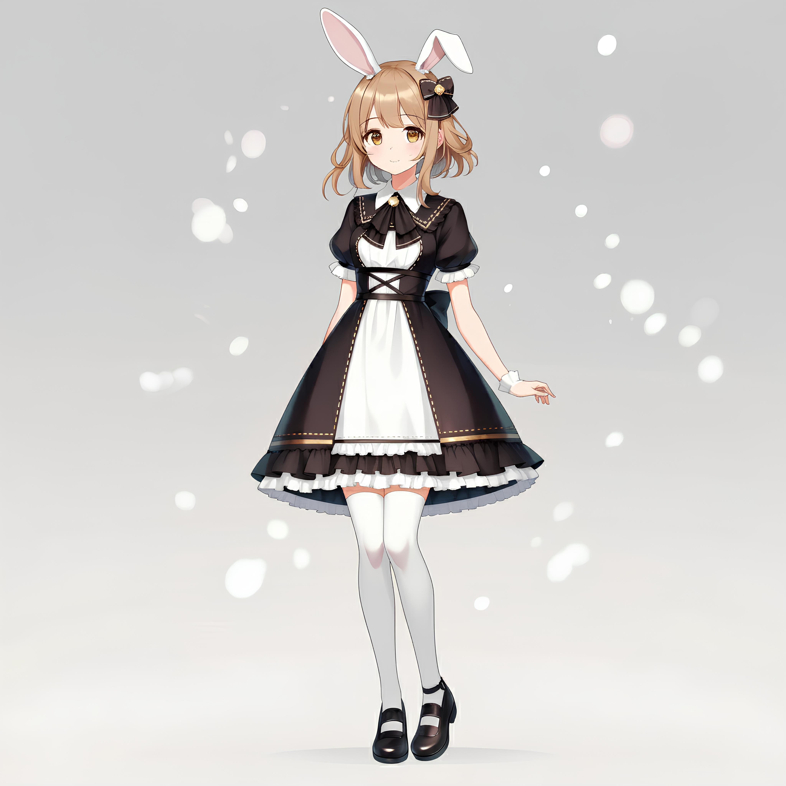
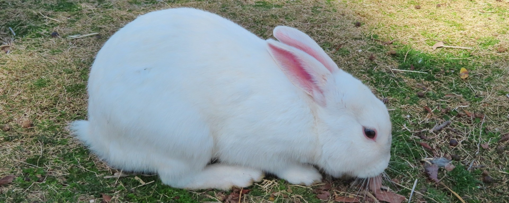
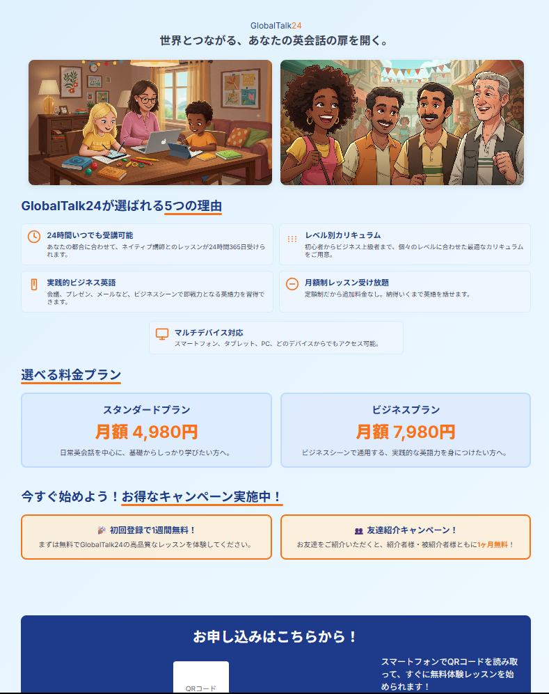
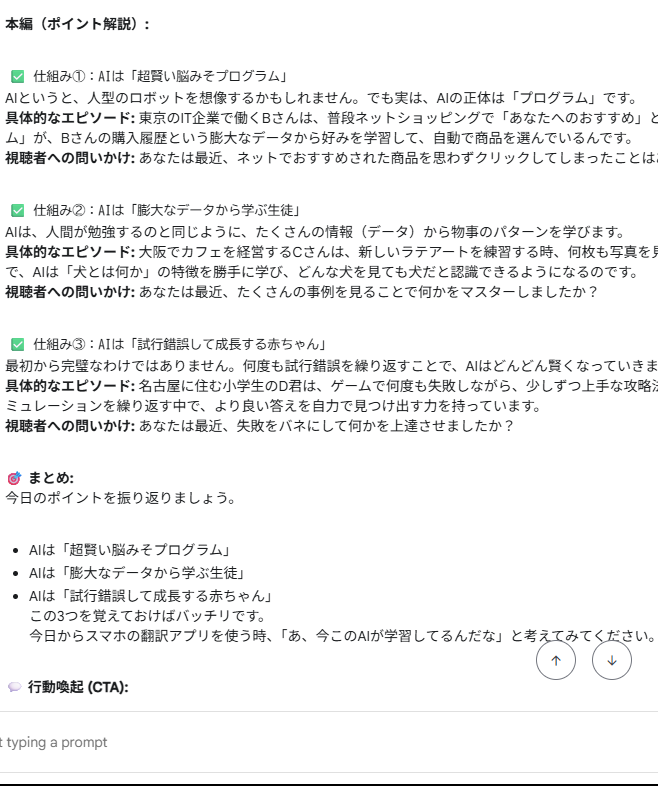
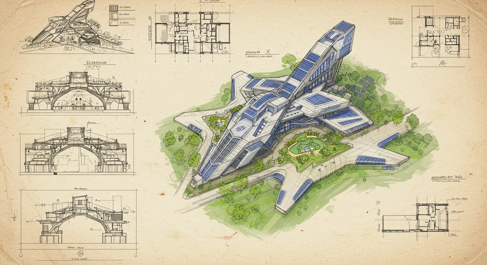

2025.07.21
福祉の現場で見つけた、AIという名の「魔法の杖」。私の実体験をお話しします
私自身が、就労支援B型事業所という福祉の現場で出会った、AIという名の「魔法の杖」の物語。ほんの少しの好奇心が、日常を輝かせ始めた私の実体験です。

ご挨拶（音声）
はじめまして。AIコンテンツクリエイターの山本 倫久と申します。
私のミッションは、AIという最先端のテクノロジーを駆使して、福祉の現場に新しい「できる」と「楽しい」を届けることです。
私自身、就労支援B型事業所を利用する中で、誰もが心の中に素晴らしい創造性の種を持っていることを実感してきました。その種を、AIという光と水で育み、一人ひとりの「好き」という気持ちを、自信を持って世に出せる「作品」へと開花させる。そのお手伝いをすることが、私の最大の喜びです。
企画、シナリオ、音楽、イラスト、動画編集まで、コンテンツ制作の全工程をワンストップで手掛けるスキルと、何より「教えること」への情熱があります。複雑なITスキルも、キャラクターの掛け合いなどを通じて、誰もが楽しみながら学べる教材へとデザインし直すことを得意としています。
Stable Diffusion等を活用したキャラクター・背景制作、および操作指導。
企画、台本(GPTs)、音声(VOICEVOX)、楽曲(Suno)、編集(YMM4)まで一貫対応。
複雑なITスキルを、初心者でも楽しく学べるインタラクティブな教材を開発。
HTML/CSS/JSを用いた、体験型学習アプリやツールのプロトタイプ開発。
当事者目線で、福祉現場の課題を解決するIT活用の企画・提案。
アイデアの壁打ちから完成まで、コンテンツ制作の全工程を伴走支援。
これまでに制作した作品の一部をご紹介します。AIイラストのカードはクリックで詳細なギャラリーを開きます。

うさぎの保護活動を行う架空のNPO法人の公式サイトを、企画・デザイン・実装まで一貫して制作。JavaScript製の3マッチパズルも搭載。
Stable Diffusionを使用し、様々なテーマのオリジナルキャラクターを制作しました。



AIを活用した新しい作業のカタチを提案する、新しいチラシです。企画からデザイン、イラスト制作まで一貫して手掛けました。

Stable Diffusionを活用し、企画からイラスト制作、申請、リリースまで一貫して行いました。現在、LINE STOREにて販売中です。

教育・解説系のYouTubeショート動画向けに、視聴者の興味を引きつけ、最後まで見てもらえる構成のシナリオをGPTsを活用して制作。

AIやPCの難しいスキルを、初心者でも楽しく、そして挫折せずに学べることを目指した動画コンテンツを配信しています。
AIで生成した音楽作品の発表や、日々の制作活動、そして私の「好き」を自由に発信する、パーソナルな活動の拠点です。
特定のスキル（例: プロンプト基礎）を、クイズや実践形式で学べるWebアプリケーションの概念設計とUI/UXデザインを行いました。

PC操作に不慣れな方でも、クリック操作だけでAIの面白さを体験できるWebアプリケーション。HTML/CSS/JSで開発。

AI(GPTs)を活用し、プロット作成から執筆までを行ったオリジナル短編小説。Kindle Direct Publishingを利用して、電子書籍として出版しました。

利用者のスキルレベルや体調に応じて、タスクの難易度や量をAIが提案するシステムの概念設計とプロトタイプ開発。

高品質なイラストを安定して生成するために、私が実際に使用・改良を重ねているプロンプトのコレクションです。思考の過程もご覧いただけます。
AIや福祉、日々の制作活動について、私の想いやノウハウを発信しています。
AIと福祉を繋ぐ、新しい挑戦にご興味をお持ちいただけましたら、
ぜひ、以下のメールアドレスまでお気軽にご連絡ください。
クリックしていただけましたら、メール機能が立ち上がる仕様になっております。
Checkpoint:
Settings: